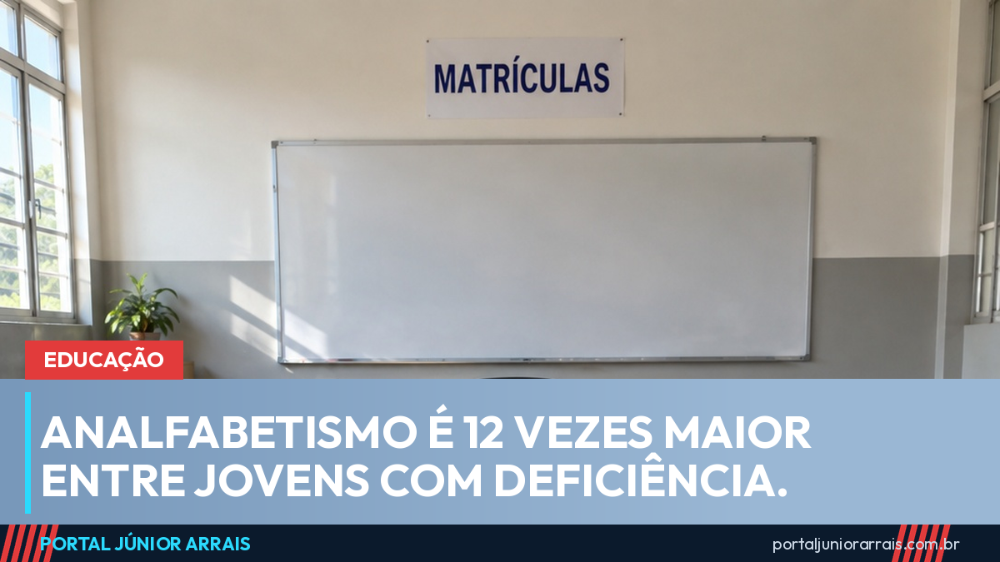

Analfabetismo é 12 vezes maior entre jovens com deficiência, aponta o Censo do IBGE

Entre os jovens de 15 a 29 anos com deficiência, 12,2% não sabiam ler e escrever em 2022. Entre os jovens sem deficiência da mesma faixa de idade, o índice era de 1%. A diferença é de 12 vezes, e está no Censo 2022 do IBGE, divulgado nesta sexta-feira (18).
O dado é duro porque se refere a quem já passou, ou deveria ter passado, por toda a escola obrigatória. Não se trata de idoso que não teve acesso a estudo no século passado: é gente nova, de uma geração inteira que cresceu com a matrícula assegurada em lei.
A saída começa antes do fim
A pesquisa também mediu a frequência escolar, e é aí que dá para ver onde o caminho se rompe. Na faixa dos 15 aos 17 anos, a idade do ensino médio, 79,5% dos adolescentes com deficiência estavam na escola, contra 85,4% dos adolescentes sem deficiência. Quase 6 pontos percentuais de diferença justamente na etapa em que o abandono já é alto para todo mundo.
Essa defasagem não fica na escola: ela reaparece anos depois na carteira de trabalho. O mesmo Censo mostrou que apenas 29% das pessoas com deficiência em idade de trabalhar estão ocupadas e que o rendimento médio delas é de R$ 2.053, contra R$ 2.890 de quem não tem deficiência. Estudo interrompido cedo é salário menor a vida inteira.
O que já existe para segurar o estudante na escola
Há programas voltados justamente a esse ponto de ruptura. O Pé-de-Meia paga uma poupança ao estudante de ensino médio da rede pública que mantém frequência e conclui o ano, e o Bolsa Família tem condicionalidade de frequência escolar, com acompanhamento de quem falta. Para o estudante com deficiência, entram ainda o direito ao atendimento educacional especializado e à adaptação de material e de prova, inclusive em concurso público.
O problema medido pelo Censo mostra que a existência do direito não basta por si só: ele precisa chegar à sala de aula, com professor de apoio, material adaptado e transporte que funcione. Onde isso falha, a matrícula existe no papel e a criança vai embora.
Cuidado com golpe
Sempre que o assunto é bolsa de estudo e benefício para estudante, surgem páginas cobrando para "fazer a inscrição" ou para "reservar a vaga" no Pé-de-Meia, em programa de transporte escolar ou em auxílio para material. Inscrição em programa educacional do governo é feita pela rede de ensino a partir da matrícula do estudante, e não depende de intermediário nem de pagamento antecipado.
Nenhum órgão público cobra taxa nem pede Pix, senha ou foto de documento para incluir aluno em programa escolar. Se a família recebeu uma cobrança dessas, ou se o benefício do estudante foi cortado sem explicação, vale procurar a direção da escola e um profissional de sua confiança antes de pagar qualquer coisa.
Conteúdo informativo — não substitui orientação individualizada sobre o seu caso.
Júnior Arrais · Editor do Portal Júnior Arrais
Comunicador de Ubá (MG). Escreve todos os dias sobre benefícios sociais, INSS, trabalho e economia do dia a dia, a partir do Diário Oficial, de portarias e de fontes oficiais, em linguagem simples. Conheça a linha editorial e a política de correções do portal.